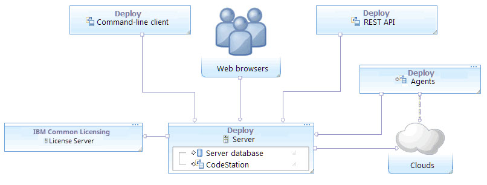
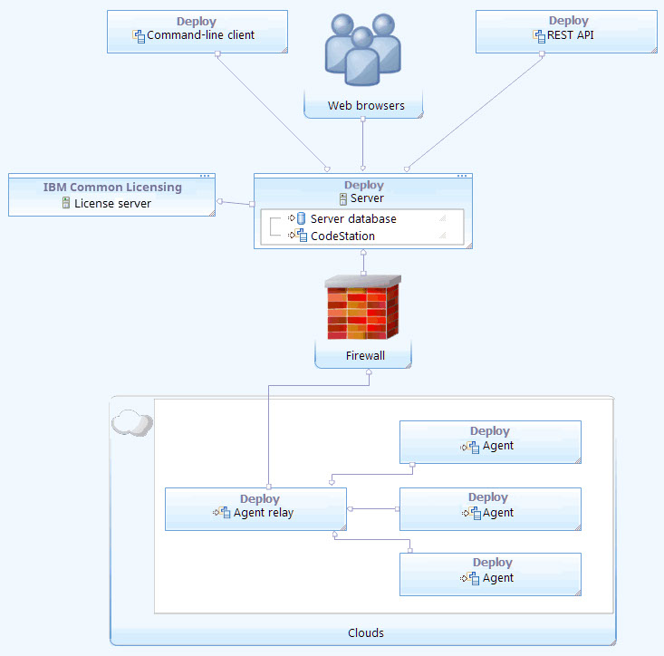
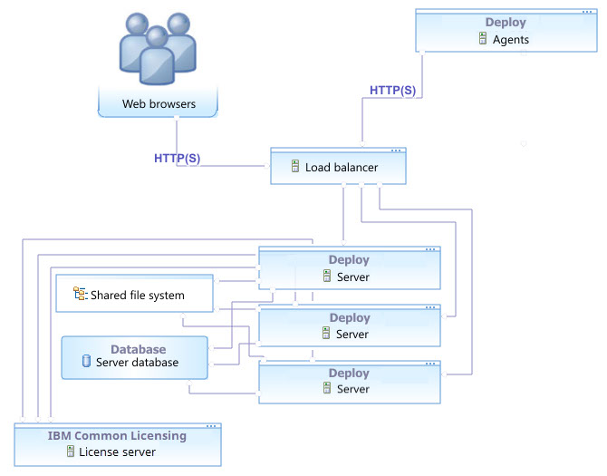
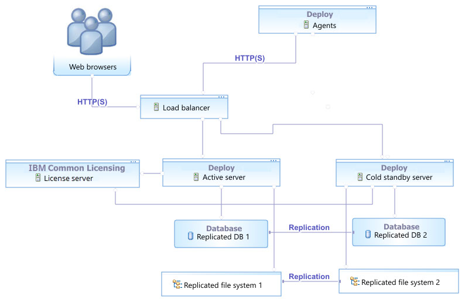
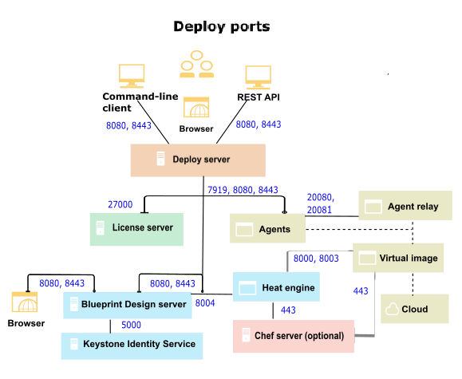

Systems and topology overview
IBM DevOps Deploy (Deploy) includes several systems, including a server and one or more agents. You can configure multiple topologies, including ones that use high availability, disaster recovery, and so on, to meet your needs.
The following system topologies, including diagrams, are shown. For explanation of the system components, see the Description of systems.
Core topology
The core installation of Deploy includes a server, agents, and a license server. Clients access the server through web browsers, the REST API, or the command-line client. Agents can be installed on cloud environments, virtual machines (VMs), containers, or physical systems; the agents are shown on cloud systems in the following diagrams, but they can be installed on many different systems.With this topology, the server can create environments on clouds that use virtual system patterns (VSPs), such as IBM® Cloud Orchestrator and IBM PureApplication® System.
For more information about supported clouds that use VSPs, see Configuring virtual system pattern-based clouds.

To install the core components, see Installing DevOps Deploy.
Multi-region topology

To install and configure an agent relay, see Installing agent relays.
High-availability clustered topologies
High-availability topologies use multiple servers. These servers can all be running at the same time to share the load (as in a clustered topology), or they can be waiting for another server to fail (as in a cold standby topology). The following diagram shows a clustered topology in which a load balancer distributes connections to three servers. Users connect directly to the load balancer, which sends them to an active server. Agents connect via HTTP and HTTPS to the load balancer. The servers store their files on a shared database and file system.
To configure a cluster of servers, see Setting up clusters of servers.
Disaster recovery topologies
One way to prepare for disaster recovery is to have a cold standby system, including a stopped server and a replicated copy of the database and file system. The following diagram shows a simple topology with a cold standby server and related resources on standby.
To configure a cold standby system for the server, see Adding cold standby servers.
Default ports
The following diagram shows the default port numbers that Deploy uses for communication. You can change most of these ports, depending on your choices during installation. The following diagram is only a summary of the default port numbers.

For more information about ports, see System Requirements.
Description of systems
- Deploy server
- The Deploy server stores components, processes, and other elements with which you model automated application deployments. You run automated deployments from the server.
- Web browsers
- Web browsers are the main way that users interact with the server. The Deploy browser-based GUI is a Rich Internet Application (RIA) that maintains much of its functionality in the browser. Clients interact with RESTful (representational state transfer) services on the server as needed.
- Command-line client
- The command-line client provides access to the server through the command line. It can automate functions on the server, such as creating components and applications, and provides most of the features that are found in the browser-based GUI. The command-line client is also built on top of RESTful services. See Command-line client (CLI) reference.
- REST API
- The REST API provides access to the server through HTTP. Like the command-line client, it can automate functions on the server, such as creating components and applications.
- Agents
- The agents run processes on target systems. Agents can run on physical computers, virtual systems, or cloud systems. See Agents.
- Agent relays
- An agent relay is a communication proxy for agents that are located behind a firewall or in another network location. See Agent relays.
- Common Licensing License server
- The license server provides licenses to the server.
- Clouds
- The clouds host virtual resources. When you create environments with the server, provisions resources on the target clouds.
- CodeStation
- CodeStation stores component versions and artifacts. It is part of the Deploy server.